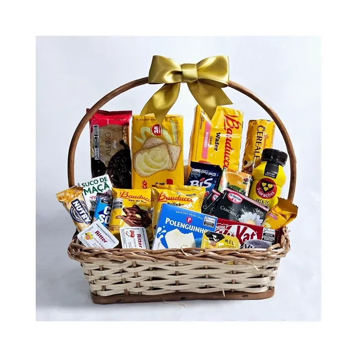

Case Zadoni Presentes · Zadoni Digital
Zadoni Presentes: estruturação da presença digital em Canaã
Site, páginas de produtos, SEO técnico e Perfil da Empresa conectados ao atendimento pelo WhatsApp. Um projeto próprio conduzido por Adonias Joshua.
Diagnóstico, implementação e acompanhamento com escopo claro.

Contexto e responsabilidade
A Zadoni Presentes é um negócio de comércio local em Canaã dos Carajás, Pará, pertencente a Adonias Joshua, criador da Zadoni Digital e responsável técnico e estratégico pelo projeto.
Este case apresenta as ações descritas por Adonias em seu relato sobre o trabalho. A relação de propriedade é parte do contexto: trata-se de um projeto próprio.
Case em desenvolvimento: o relato das intervenções já está organizado; a documentação de métricas e períodos de comparação permanece em preparação.
O desafio: conectar descoberta, produtos e atendimento
O ponto de partida descrito pelo responsável era uma presença digital fragmentada. O desafio foi organizar uma estrutura que apresentasse os produtos, respondesse às necessidades de quem busca presentes em Canaã dos Carajás e facilitasse o contato pelo WhatsApp.
A estratégia reuniu o site, as páginas dedicadas a produtos e ocasiões e as informações do Perfil da Empresa no Google. O objetivo comercial era conduzir o público interessado até o atendimento com mais clareza sobre a oferta.
Site e conteúdo orientados às necessidades do cliente

O trabalho relatado incluiu a criação e otimização do site e a organização de páginas para categorias, produtos e intenções de busca locais. Entre os temas trabalhados estão presentes, buquês, cestas, floricultura, café da manhã e presentes românticos.
- Páginas dedicadas a diferentes produtos e necessidades de compra.
- Conteúdo voltado às dúvidas e buscas do público local.
- Links internos para conectar informações relacionadas.
- Ajustes na experiência em dispositivos móveis.
- Caminhos de contato com o atendimento pelo WhatsApp.
A proposta foi dar a cada página uma função: explicar uma oferta, responder uma dúvida ou ajudar o visitante a avançar para a conversa.
SEO técnico e acompanhamento da indexação
Adonias descreve a revisão de títulos, descrições, headings, URLs, imagens, links internos e dados estruturados. O escopo também envolveu a configuração do Google Search Console e o acompanhamento da indexação das páginas.
O site foi conectado ao WhatsApp e aos demais canais digitais do negócio. Essas intervenções fazem parte da base técnica e de conteúdo descrita no projeto; não estabelecem, por si só, uma quantidade de visitas, contatos ou vendas.
Perfil da Empresa no Google
O relato inclui a otimização do Perfil da Empresa no Google, também conhecido como Google Meu Negócio ou GBP. O trabalho abrangeu categorias, produtos, publicações, imagens e informações comerciais.
Também foram relatadas a correção de inconsistências e a remoção de uma presença duplicada no Google. A apresentação desse trabalho registra a intervenção informada pelo responsável, sem atribuir a ela um efeito isolado sobre a classificação local.
O que o projeto passou a reunir
Segundo o responsável, a Zadoni Presentes passou a contar com uma presença digital mais organizada, com páginas próprias para diferentes produtos e ocasiões e caminhos de contato pelo WhatsApp. Essa é a evolução estrutural descrita no case.
A estratégia conecta criação de sites, SEO Local, conteúdo, Perfil da Empresa e experiência de navegação. O conjunto foi pensado para apoiar a descoberta e o atendimento, com uma base que possa continuar sendo aprimorada.
Sobre os resultados: ainda não são apresentados dados de antes e depois, períodos ou relatórios de tráfego, cobertura de indexação, conversas e vendas. Por isso, esta versão não quantifica crescimento nem atribui aumento comercial às intervenções. Esses indicadores poderão complementar o case quando houver registros comparáveis.
Aplicação em outros negócios locais
O projeto mostra, pelo escopo relatado, como organizar páginas, informações comerciais e atendimento em uma estratégia integrada. O aprendizado central é definir a função de cada canal e de cada página antes de executar melhorias.
Outros pequenos negócios precisam de uma avaliação própria: oferta, região atendida, estrutura existente e capacidade de responder aos contatos mudam as prioridades. O diagnóstico inicial ajuda a organizar essa conversa, sem assumir que os resultados de um projeto se repetirão em outro.
Perguntas frequentes
A Zadoni Presentes é um cliente externo?
É um negócio próprio de Adonias Joshua, também responsável pela Zadoni Digital. Essa relação está explicitada na apresentação do projeto.
Já há métricas de crescimento publicadas neste case?
Esta versão reúne o relato das intervenções e da organização da presença digital. A documentação de resultados com períodos e dados comparáveis ainda está em preparação.
Outras formas de ajudar
Vamos começar pelo que importa
Qual é a prioridade do seu negócio?
Entenda o ponto de partida e converse sobre uma proposta adequada à sua realidade.